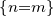
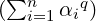
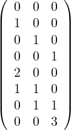

7 Function bases and regression
7.1 Overview
To use these functionalities, you should include pnl/pnl_basis.h.
struct PnlBasis_t {
PnlObject object;
/** The basis type */
int id;
/** The string to label the basis */
const char *label;
/** The number of variates */
int nb_variates;
/** The total number of elements in the basis */
int nb_func;
/** The tensor matrix */
PnlMatInt *T;
/** The sparse Tensor matrix */
PnlSpMatInt *SpT;
/** The number of functions in the tensor #T */
int len_T;
/** The i-th element of the one dimensional basis. */
double (*f)(double x, int i);
/** The first derivative of i-th element of the one dimensional basis */
double (*Df)(double x, int i);
/** The second derivative of the i-th element of the one dimensional basis */
double (*D2f)(double x, int i);
/** TRUE if the basis is reduced */
int isreduced;
/** The center of the domain */
double *center;
/** The inverse of the scaling factor to map the domain to [-1, 1]^nb_variates */
double *scale;
/** An array of additional functions */
PnlRnFuncR *func_list;
/** The number of functions in #func_list */
int len_func_list;
};
A PnlBasis is a family of multivariate functions with real values. Tow different kinds of functions
can be stored in these families: tensor functions — originally, this was the only possibility, and
standard multivariate function typed as PnlRnFuncR.
Tensor functions.
Tensors functions are built as a tensor product of one dimensional elements. Hence, we only need a
tensor matrix T to describe a multi-dimensional basis in terms of the one dimensional one. These
tensors functions can be easily evaluated and differentiated twice, see pnl_basis_eval,
pnl_basis_eval_vect, pnl_basis_eval_D, pnl_basis_eval_D_vect, pnl_basis_eval_D2,
pnl_basis_eval_D2_vect, pnl_basis_eval_derivs, pnl_basis_eval_derivs_vect.
The two tensors T and SpT do actually store the same information — T(i,j) is the degree w.r.t the
j-th variable in the i-th function. Originally, we were only using the dense representation T, which is
far more convenient to use when building the basis but it slows down the evaluation of
the basis by a great deal. To overcome this lack of efficiency, a sparse storage has been
added.
| PNL_BASIS_CANONICAL | | for the Canonical polynomials |
| PNL_BASIS_HERMITE | | for the Hermite polynomials |
| PNL_BASIS_TCHEBYCHEV | | for the Tchebychev polynomials |
| |
The Hermite polynomials are defined by
If G is a real valued standard normal random variable, E[Hn(G)Hm(G)] = n!1.
Standard multivariate functions.
These functions are supposed to be PnlRnFuncR.
To make this toolbox more complete, it is now possible to add some extra functions, which are not
tensor product. They are stored using an independent mechanism in func_list. These additional
functions are only taken into account by the methods pnl_basis_i, pnl_basis_i_vect,
pnl_basis_eval and pnl_basis_eval_vect. Note in particular that it is not possible to
differentiate these functions. To add an extra function to an existing PnlBasis, call the function
pnl_basis_add_function.
7.2 Functions
- int pnl_basis_type_register (const char *name, double (*f)(double, int), double
(*Df)(double, int), double (*D2f)(double, int))
Description Register a new basis type and return the index to be passed to pnl_basis_create .
The variable name is a unique string identifier of the family. The variables f, Df, D2f are the
one dimensional basis functions, its first and second order derivatives. Each of these functions
must return a double and take two arguments : the first one is the point at which evaluating
the basis functions, the second one is the index of function. Here is a toy example to show
how the canonical basis is registered (this family is actually already available with
the id PNL_BASIS_CANONICAL, so the following example may look a little
fake)
double f(double x, int n) { return pnl_pow_i(x, n); }
double Df(double x, int n) { return n * pnl_pow_i(x, n-1); }
double f(double x, int n) { return n * (n-1) * pnl_pow_i(x, n-2); }
int id = pnl_basis_register ("Canonic", f, Df, D2f);
/*
* B is the Canonical basis of polynomials with degree less or equal than 2 in
* dimension 5.
*/
PnlBasis *B = pnl_basis_create_from_degree (id, 2, 5);
- PnlBasis * pnl_basis_new ()
Description Create an empty PnlBasis .
- void pnl_basis_print (const PnlBasis *B)
Description Print the characteristics of a basis.
- PnlBasis * pnl_basis_create (int index, int nb_func, int nb_variates)
Description Create a PnlBasis for the family defined by index (see Table 3 and
pnl_basis_type_register) with nb_variates variates. The basis will contain nb_func.
- PnlBasis * pnl_basis_create_from_degree (int index, int degree, int nb_variates)
Description Create a PnlBasis for the family defined by index (see Table 3 and
pnl_basis_type_register) with total degree less or equal than degree and nb_variates
variates. The total degree is the sum of the partial degrees.
For instance, calling pnl_basis_create_from_degree (index, 2, 4) is equivalent to calling
pnl_basis_create_from_tensor (index, T) where T is given by

- PnlBasis * pnl_basis_create_from_prod_degree (int index, int degree, int
nb_variates)
Description Create a PnlBasis for the family defined by index (see Table 3 and
pnl_basis_type_register) with total degree less or equal than degree and nb_variates
variates. The total degree is the product of MAX(1, d_i) where the d_i are the partial
degrees.
- PnlBasis * pnl_basis_create_from_tensor (int index, PnlMatInt *T)
Description Create a PnlBasis for the polynomial family defined by index (see Table 3)
using the basis described by the tensor matrix T. The number of lines of T is the number of
functions of the basis whereas the numbers of columns of T is the number of variates of the
functions. Note that T is not copied inside this function but only its address is stored, so
never free T. It will be freed when calling pnl_basis_free on the returned object.
i
Here is an example of a tensor matrix. Assume you are working with three variate functions,
the basis { 1, x, y, z, x^2, xy, yz, z^3} is decomposed in the one dimensional
canonical basis using the following tensor matrix

- void pnl_basis_add_function (PnlBasis *b, PnlRnFuncR *f)
Description Add the function f to the already existing basis b.
- void pnl_basis_clone (PnlBasis *dest, const PnlBasis *src)
Description Clone src into dest. The basis dest must already exist before calling this
function. On exit, dest and src are identical and independent.
- PnlBasis * pnl_basis_copy (const PnlBasis *B)
Description Create a copy of B.
- void pnl_basis_set_from_tensor (PnlBasis *b, int index, const PnlMatInt
*T)
Description Set an alredy existing basis b to a polynomial family defined by index (see
Table 3) using the basis described by the tensor matrix T. The number of lines of T is the
number of functions of the basis whereas the numbers of columns of T is the number of
variates of the functions.
Same function as pnl_basis_create_from_tensor except that it operates on an already
existing basis.
- PnlBasis * pnl_basis_create_from_hyperbolic_degree (int index, double degree,
double q, int n)
Description Create a sparse basis of polynomial with n variates. We give the example of the
Canonical basis. A canonical polynomial with n variates writes X1α1X2α2…Xnαn. To be a
member of the basis, it must satisfy  1∕q ≤ degree. This kind of basis based on
an hyperbolic set of indices gives priority to polynomials associated to low order
interaction.
1∕q ≤ degree. This kind of basis based on
an hyperbolic set of indices gives priority to polynomials associated to low order
interaction.
- void pnl_basis_free (PnlBasis **basis)
Description Free a PnlBasis created by pnl_basis_create. Beware that basis is the address
of a PnlBasis *.
- void pnl_basis_del_elt (PnlBasis *B, const PnlVectInt *d)
Description Remove the function defined by the tensor product d from an existing basis
B.
- void pnl_basis_del_elt_i (PnlBasis *B, int i)
Description Remove the i-th element of basis B.
- void pnl_basis_add_elt (PnlBasis *B, const PnlVectInt *d)
Description Add the function defined by the tensor d to the Basis B.
Functional regression based on a least square approach often leads to ill conditioned linear systems.
One way of improving the stability of the system is to use centered and renormalised
polynomials so that the original domain of interest D (a subset of ℝd) is mapped to [-1,1]d.
If the domain D is rectangular and writes [a,b] where a,b ∈ ℝd, the mapping is done
by
 | (1) |
- void pnl_basis_set_domain (PnlBasis *B, const PnlVect *a, const PnlVect *b)
Description This function declares B as a centered and normalised basis as defined by
Equation 1. Calling this function is equivalent to calling pnl_basis_set_reduced with
center=(b+a)/2 and scale=(b-a)/2.
- void pnl_basis_set_reduced (PnlBasis *B, const PnlVect *center, const PnlVect
*scale)
Description This function declares B as a centered and normalised basis using the
mapping
The following functions are provided for compatibility purposes but are marked as deprecated. Use
the functions with the _vect extension.
- double pnl_basis_ik (const PnlBasis *b, const double *x, int i, int k)
Description Same as function pnl_basis_ik_vect but takes a C array as the point of
evaluation.
- double pnl_basis_i (PnlBasis *b, double *x, int i)
Description Same as function pnl_basis_i_vect but takes a C array as the point of
evaluation.
- double pnl_basis_i_D ( const PnlBasis *b, const double *x, int i, int j )
Description Same as function pnl_basis_i_D_vect but takes a C array as the point
of evaluation.
- double pnl_basis_i_D2 (const PnlBasis *b, const double *x, int i, int j1, int j2)
Description Same as function pnl_basis_i_D2_vect but takes a C array as the point
of evaluation.
- double pnl_basis_eval (PnlBasis *P, PnlVect *coef, double *x)
Description Same as function pnl_basis_eval_vect but takes a C array as the point
of evaluation.
- double pnl_basis_eval_D (PnlBasis *P, PnlVect *coef, double *x, int i)
Description Same as function pnl_basis_eval_D_vect but takes a C array as the
point of evaluation.
- double pnl_basis_eval_D2 (PnlBasis *P, PnlVect *coef, double *x, int i, int j)
Description Same as function pnl_basis_eval_D2_vect but takes a C array as the
point of evaluation.
- void pnl_basis_eval_derivs (PnlBasis *P, PnlVect *coef, double *x, double *fx,
PnlVect *Dfx, PnlMat *D2fx)
Description Same as function pnl_basis_eval_derivs_vect but takes a C array as
the point of evaluation.